Botany Buddy
UI Case Study | Native App - iOS and Android

The Problem
Fragmentation of Diagnostic Information: Plant owners face a high-friction experience due to fragmented information, requiring them to use multiple tools (ID app, website, journal) to identify, track, and diagnose plant health issues.
The Goal
To consolidate these functions into a single, reliable application, providing instant, accurate identification and integrated, data-driven health tracking. The solution was meticulously developed for platform parity across both iOS and Android, utilizing their respective native design systems (e.g., Human Interface Guidelines and Material Design) to ensure a seamless and compliant user experience on both operating systems.
The Solution
I created a system that is fundamentally a diagnostic and information retrieval tool wrapped in a modern interface. The primary feature is the Camera Diagnostic Flow, allowing users to photograph a plant for identification and specific leaf damage for diagnosis and prescribed care tips

Research & Process
- Methodology: Project foundation was built through thorough research, including competitive analysis, to identify key user needs: plant identification, care reminders, and health diagnosis.
- Dual-Platform Design: I paid special attention to platform parity, designing separate, validated iterations for both iOS and Android to respect each operating system's unique interaction patterns and visual conventions.
- Design & Validation: The process spanned from user flows and wireframes (for both platforms) to the style guide and mockups. Effectiveness was ensured through A/B testing on key features and comprehensive user testing.
Key Design Features
Primary Features:
- Identify plants by taking photos for instant species recognition.
- Track plant health and receive personalized care tips and automated routines (watering, fertilizing).
- Diagnose issues by taking photos of leaf damage for accurate prognosis.
Technical Mitigation:I implemented guided camera instructions (copy helping capture clear photos) within the diagnostic flow. This proactively mitigates the common constraint of poor photo quality, which significantly improves data input and identification accuracy.
Context of Use (Why a Native App): The native mobile app design ensures quick camera access for identification, supports offline use for outdoor settings (gardens/wild plants), and utilizes push notifications for timely care reminders.
Prototypes
iOS
(swipe to view more)


 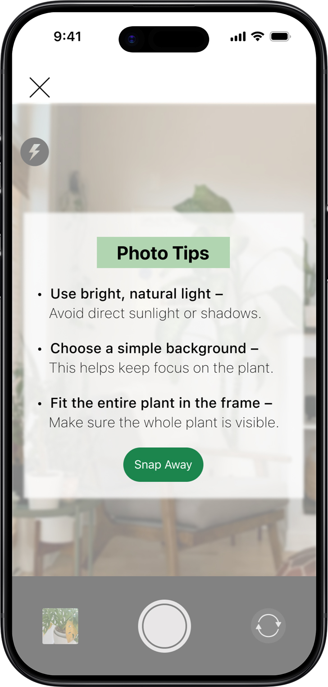
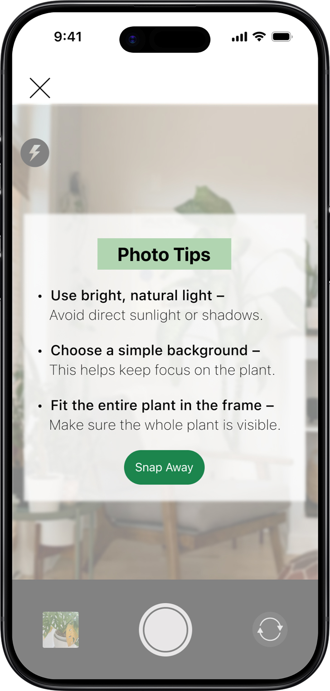


 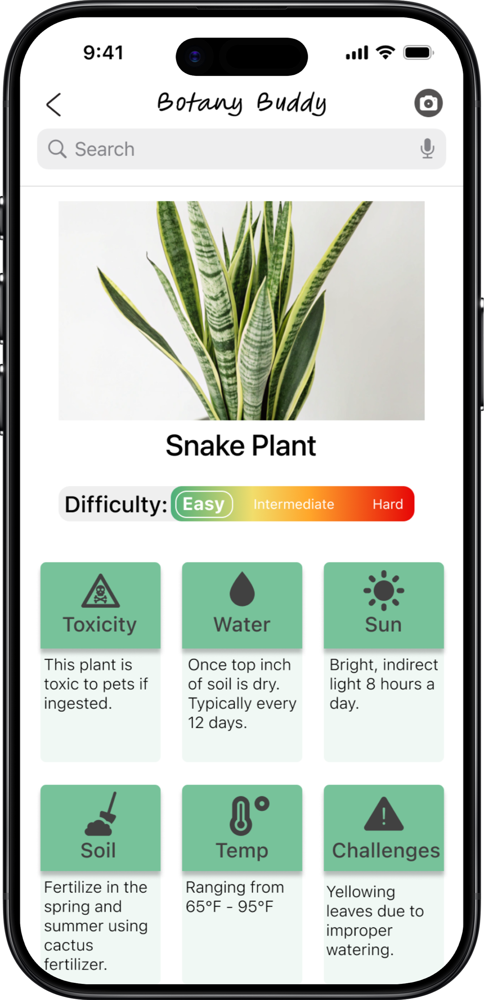
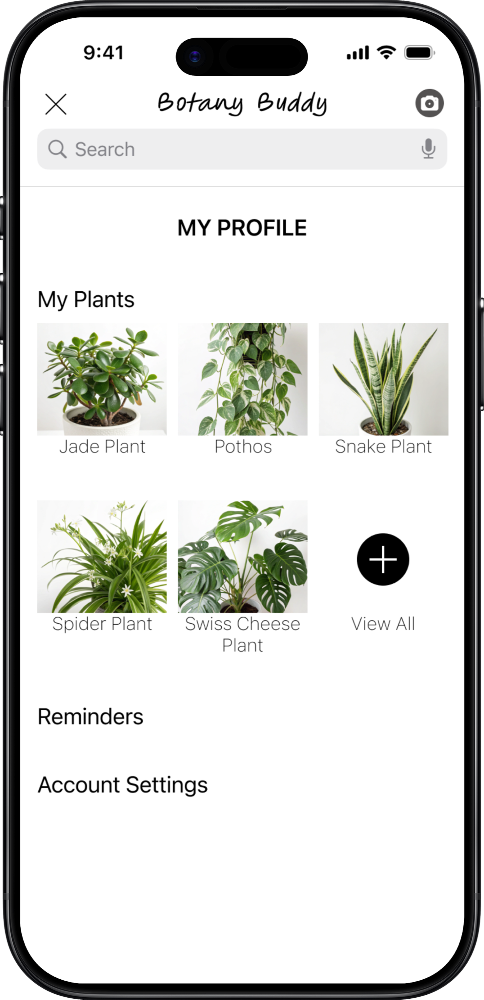
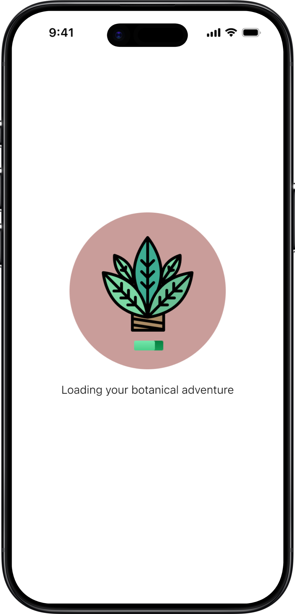
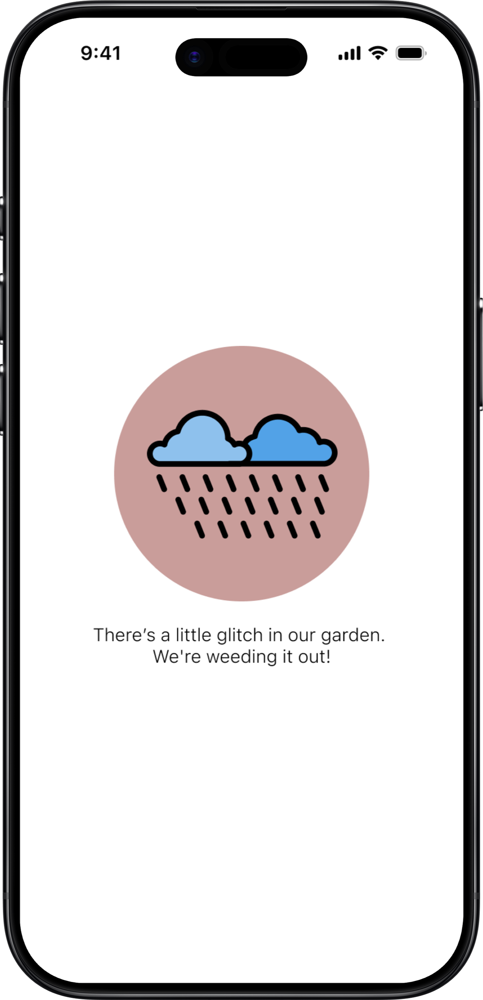
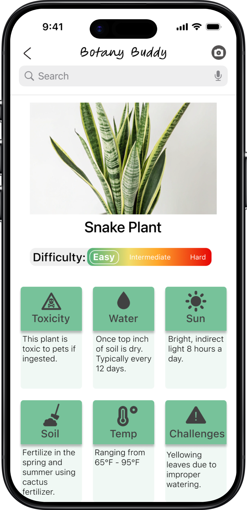
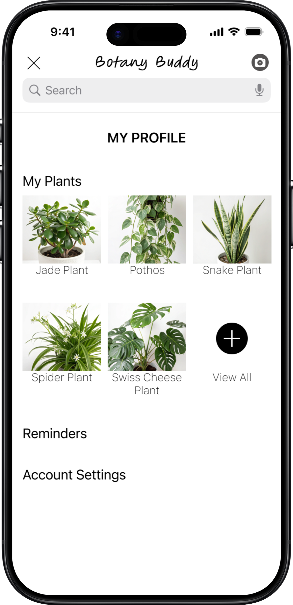
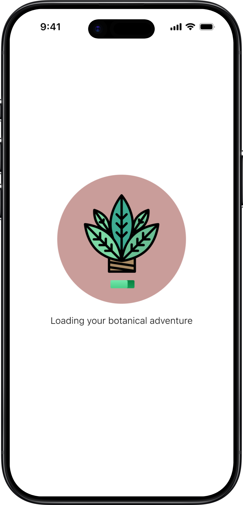
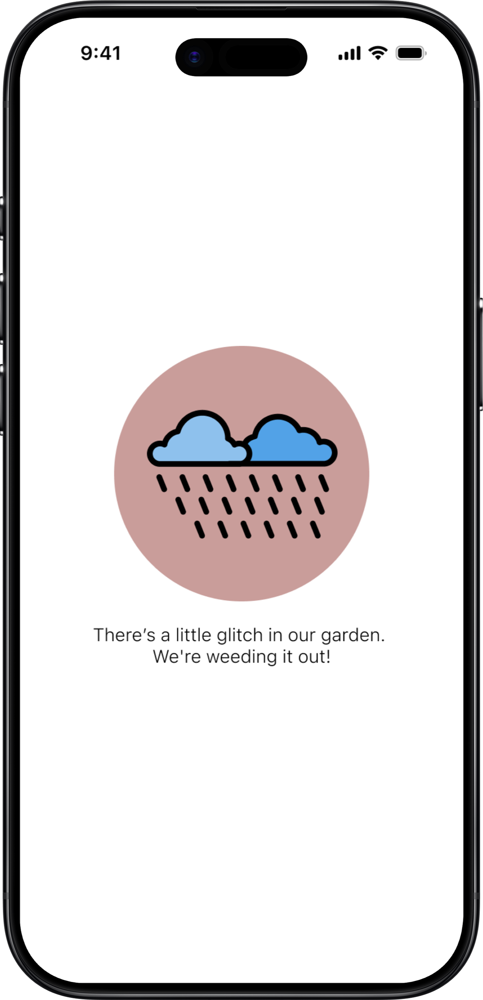
Android
(swipe to view more)


 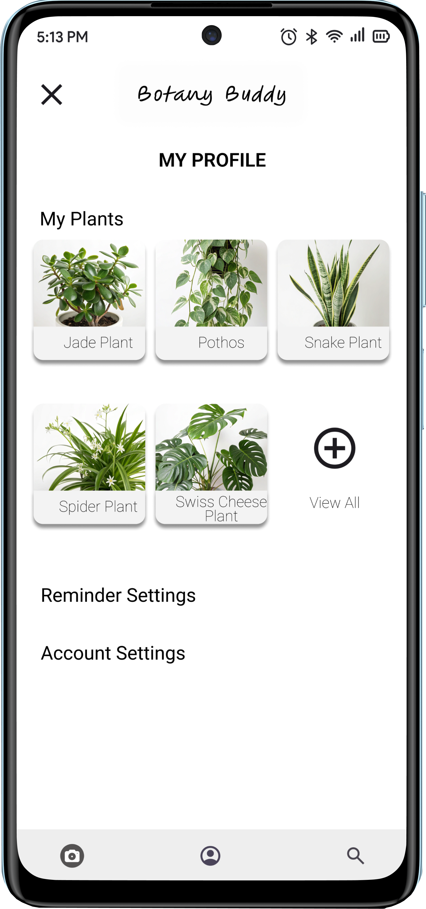
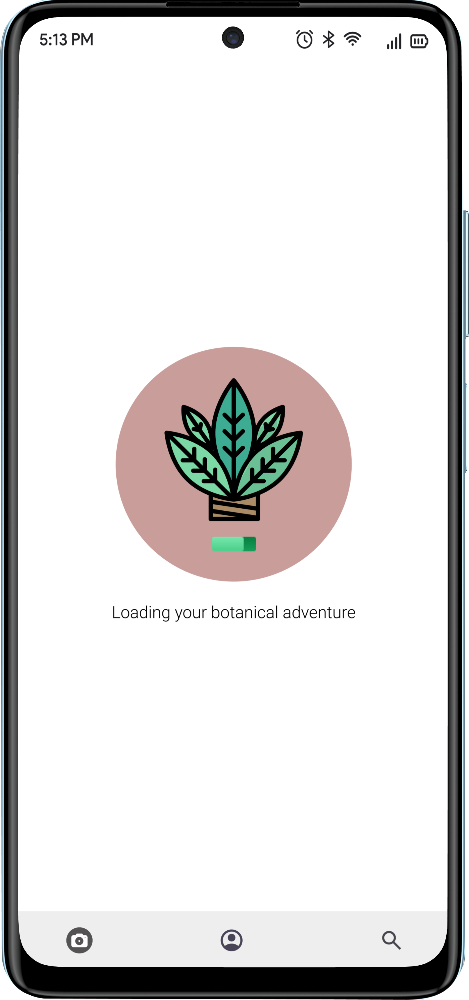
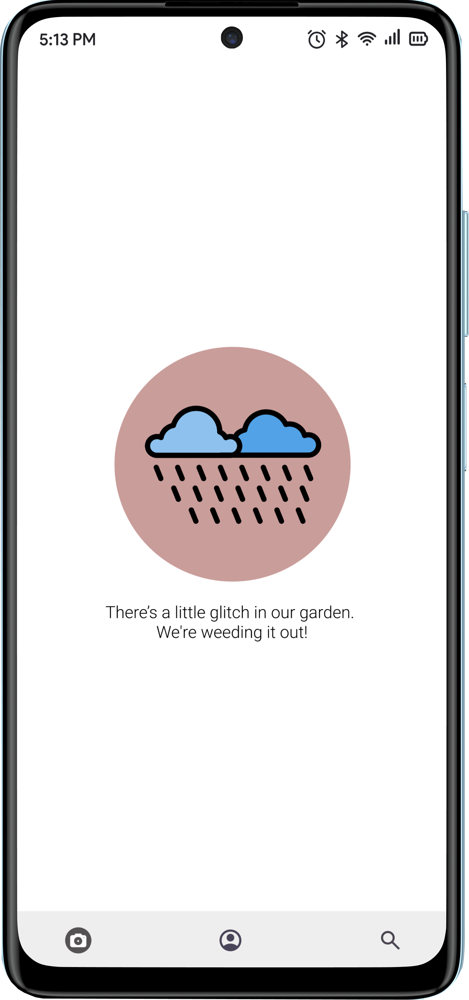
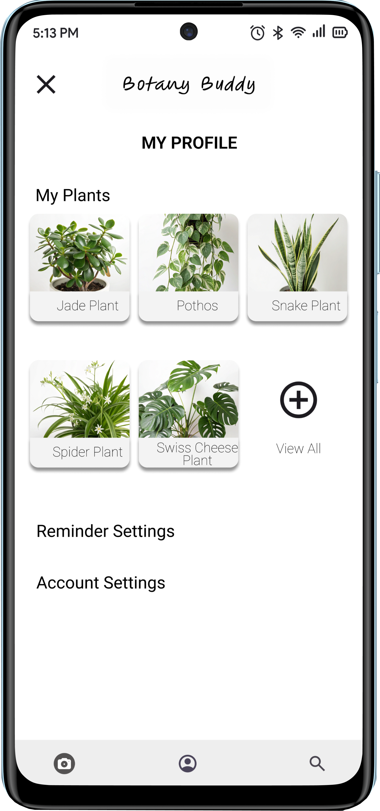
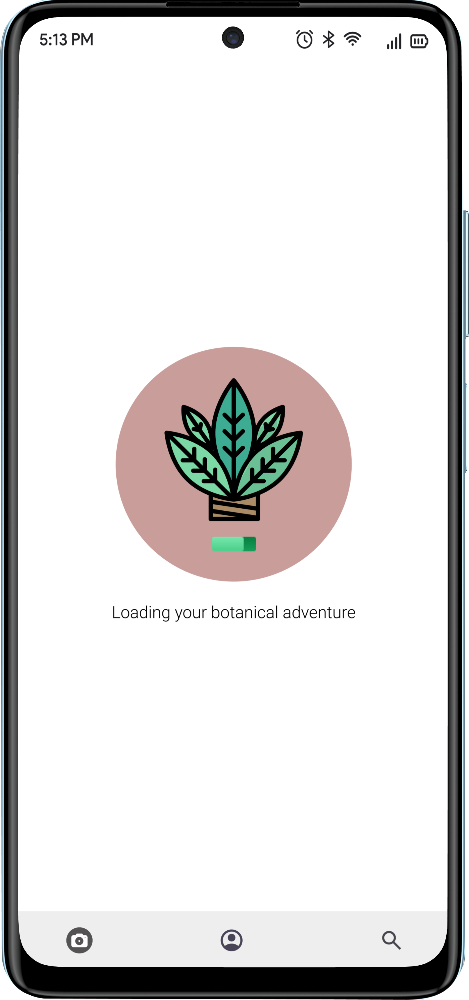
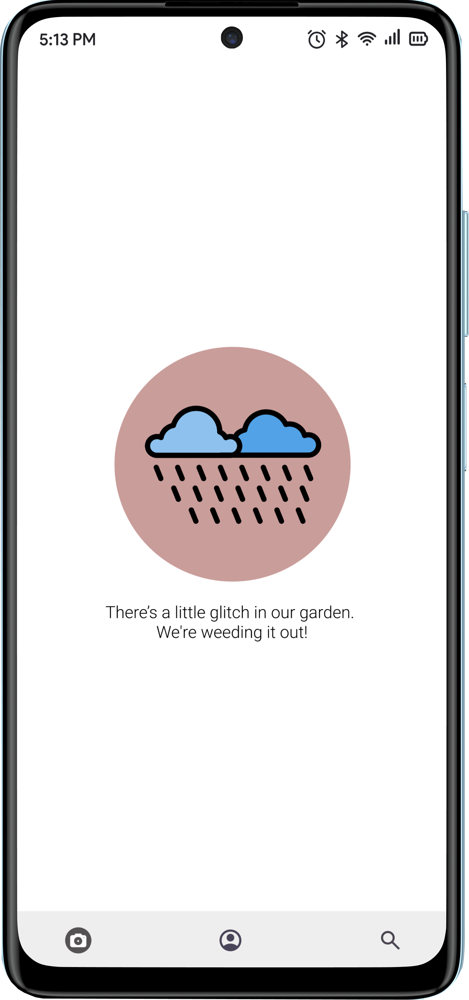
Userflows

Wireframes
iOS
(swipe to view more)


Android
(swipe to view more)


Style Guide
COLORS
(swipe to view more)


LOGO
Typography: Figma Hand Regular pt 30
Conclusion
Developing Botany Buddy provided valuable insights into designing for a specific user need: plant care. This project highlighted the importance of combining practical tools, like care reminders and visual diagnosis, with user-friendly features such as plant identification. I learned how to create an intuitive experience that empowers users to confidently care for their plants, regardless of their experience level.
The app's impact lies in its potential to make plant care more accessible and enjoyable, fostering a deeper connection between users and their greenery. By addressing common pain points, Botany Buddy simplifies a traditionally complex task.